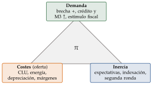
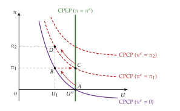
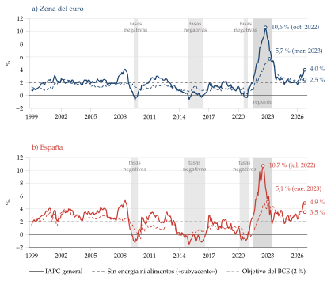
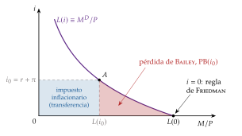
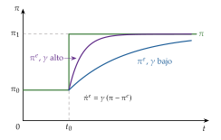
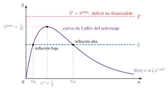
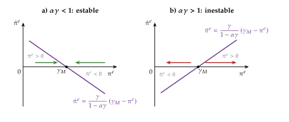
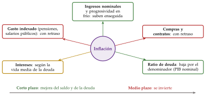

Tema 3.A.41
La inflación: causas y efectos sobre la eficiencia económica y el bienestar. Hiperinflación y deflación.
Triángulo de Gordon, curva de Phillips, persistencia, triángulo de Bailey, regla de Friedman, objetivo del 2 %, modelo de Cagan, hiperinflación y deflación.
Exclusivo Material exclusivo de victorgutierrezmarcos.es y la app Oposición TCEE · DCE. Puedes usarlo libremente para tu estudio personal. No se autoriza su incorporación a otras plataformas, aplicaciones o servicios. Condiciones de uso.
Introducción
Enganche:
«Quien juega con fuego, se quema», dice el refrán. En octubre de 1923, en Alemania, los precios se multiplicaron casi por 300 en un solo mes: se duplicaban cada 3,7 días (Hanke y Krus, 2013). El Gobierno pagaba su déficit con la imprenta, y el marco acabó sin valor (Sargent, 1982).
Un siglo después, la preocupación de la zona del euro era la contraria: los precios bajaron en tasa interanual en 2009, entre diciembre de 2014 y marzo de 2015, en 2016 y de agosto a diciembre de 2020, y el BCE luchaba contra la deflación (Eurostat, 2026a).
Y el fuego ha vuelto: en octubre de 2026 la inflación de la zona del euro ha subido al 4,0 %, empujada por la energía, que se encarece un 20,8 % en un año (Eurostat, 2026b); en España se mantiene en el 4,9 % (Instituto Nacional de Estadística, 2026a). Las expectativas a largo plazo, sin embargo, siguen ancladas en el 2,0 % (Banco Central Europeo, 2026c).
Detrás hay 2 preguntas: ¿de dónde sale ese fuego y cuánto calor conviene?
Relevancia:
Para la teoría: la inflación es el campo de pruebas de la macroeconomía. La neutralidad del dinero, la curva de Phillips, las expectativas racionales, la inconsistencia temporal, las rigideces de precios de la nueva economía keynesiana y la relación entre la política monetaria y la fiscal se discutieron, sobre todo, a propósito de ella.
Para la política económica: la estabilidad de precios es el objetivo principal del Sistema Europeo de Bancos Centrales (Unión Europea, 2016, art. 127.1), que el BCE concreta en un objetivo simétrico del 2 % a medio plazo, fijado en julio de 2021 y confirmado en junio de 2025 (Banco Central Europeo, 2021, 2025) [ver tema 3.A.36].
Para el bienestar: la inflación es un impuesto que no aprueba ningún parlamento, y recae más sobre los hogares de renta baja, que gastan una parte mayor de su renta en energía y alimentos (Charalampakis et al., 2022).
Contextualización:
Definiciones:
la inflación es el aumento sostenido y generalizado del nivel de precios; se mide con la tasa de variación de un índice de precios, \(\pi_t\equiv(P_t-P_{t-1})/P_{t-1}\);
la deflación es su contrario, una caída sostenida y generalizada (no basta con un mes negativo), y la desinflación, que la inflación baje sin dejar de ser positiva;
la hiperinflación es, en la definición de Cagan (1956), una inflación de más del 50 % al mes.
Medición: el IPC (y en la Unión Europea el IAPC, que permite comparar países) mide los precios de consumo; el deflactor del PIB, los de todo lo que se produce en el país, sin lo importado; y la inflación subyacente quita los componentes más volátiles, la energía y los alimentos, para ver la tendencia [ver tema 3.A.9]. Todos tienen sesgos: el IPC tiende a sobrestimar la subida del coste de la vida, porque no recoge del todo las mejoras de calidad, los productos nuevos ni la sustitución entre bienes (II.2).
Las 4 etapas de la teoría:
la teoría cuantitativa: a largo plazo, la cantidad de dinero fija los precios [ver tema 3.A.3];
la keynesiana y la síntesis: inflación de demanda y de costes, y la curva de Phillips como menú entre inflación y paro (Phillips, 1958; Samuelson y Solow, 1960) [ver tema 3.A.5];
la de las expectativas, de 1968 a los 80: la curva aumentada (Friedman, 1968; Phelps, 1967), las expectativas racionales (Lucas, 1972), la inconsistencia temporal (Kydland y Prescott, 1977) y, en el lado fiscal, la aritmética monetarista desagradable (Sargent y Wallace, 1981);
la de la nueva síntesis: precios rígidos con expectativas racionales y bancos centrales independientes con un objetivo de inflación. Entre 1999 y 2020 la inflación media de la zona del euro fue del 1,6 % (Eurostat, 2026a); tras 2008 la preocupación fue la deflación, y desde 2021, la vuelta de la inflación (Bernanke y Blanchard, 2025).
Consenso y debate:
hay consenso en 2 cosas: a largo plazo la inflación sigue al dinero, y una inflación alta y volátil es mala para la eficiencia, el bienestar y la estabilidad;
el debate está en qué la mueve a corto plazo y por qué persiste (para los modelos neoclásicos, la inflación desaparece al retirar el estímulo; para los keynesianos, las rigideces la mantienen), y en qué objetivo conviene: la regla de Friedman pide una deflación suave; las rigideces nominales, inflación nula; el límite inferior de los tipos y la rigidez de los salarios a la baja, algo positiva.
Problemática:
¿Qué causa la inflación: el dinero, la demanda, los costes o su propia inercia? ¿Es siempre un fenómeno monetario?
¿Qué cuesta la inflación, depende de que se anticipe y existe una tasa óptima?
¿Por qué son tan dañinos los extremos, la hiperinflación y la deflación, y cómo se sale de ellos?
Estructura: la exposición sigue el orden del título, en 3 partes:
I. Causas de la inflación (I): del debate entre clásicos y keynesianos al triángulo de Gordon, con sus 3 vértices, la demanda, los costes y la inercia, aplicado a la inflación de 2021-2026;
II. Efectos sobre la eficiencia económica y el bienestar (II): los costes de la inflación anticipada y de la no anticipada, la tasa de inflación óptima y la estabilización;
III. Contextos extremos: hiperinflación y deflación (III): los 2 incendios, el de demasiado fuego y el de ninguno.
Los extremos van al final porque se entienden con las causas (el déficit que se paga con dinero, la demanda que se hunde) y con los costes, que en ellos se multiplican.
Para seguir la inflación: el IPC del INE, https://www.
3.A.41. La inflación: causas, efectos, hiperinflación y deflación
Introducción
I. Causas de la inflación
1. Debate tradicional de la inflación en modelos clásicos y keynesianos
2. Causas de la inflación en modelos dinámicos: el triángulo de Gordon (1982)
demanda · costes · inercia · la inflación de 2021-2026
II. Efectos sobre la eficiencia económica y el bienestar
1. Costes de la inflación anticipada y no anticipada
2. ¿Existe una tasa de inflación óptima?
3. Inflación y estabilización macroeconómica
III. Contextos extremos: hiperinflación y deflación
1. Hiperinflación
2. Deflación
Conclusión
Reparto del cante: introducción, 2′30″; I, 13′ (I.1, 1′30″; I.2, 11′30″: presentación del triángulo, 1′; demanda, 4′30″; costes, 2′; inercia, 2′30″; la inflación de 2021-2026, 1′30″); II, 8′ (II.1, 4′; II.2, 3′; II.3, 1′); III, 5′30″ (III.1, 3′30″; III.2, 2′), y conclusión, 1′. La pizarra se organiza en 3 zonas. A la izquierda, durante todo el bloque I, el triángulo de Gordon (gráfico 1) con su ecuación (3) recuadrada debajo, y junto a cada vértice su refrán pegatina: «echar leña al fuego» (la demanda), «la pescadilla que se muerde la cola» (la segunda ronda, entre los costes y la inercia) y «genio y figura, hasta la sepultura» (la inercia); en el bloque II, «las cuentas claras y el chocolate espeso» (la inflación como unidad de cuenta que falla) y «curarse en salud» (el objetivo del 2 %). En el centro, el gráfico de cada apartado, uno tras otro: la curva de Phillips aumentada (gráfico 2), el panel b del modelo de la nueva economía keynesiana (gráfico 3), el triángulo de Bailey, la curva de Laffer del señoreaje y la estabilidad del modelo de Cagan. A la derecha, las ecuaciones que se escriben de paso. Lo que la exposición resume (los modelos clásico y keynesiano y la historia de la curva de Phillips, Cagan con expectativas racionales, la persistencia en detalle, la inflación y las cuentas públicas y el resumen de Lucas, Barro y Gordon y la política fiscal) está en los anexos A a E.
I. Causas de la inflación
Empezamos por las causas, del debate tradicional entre clásicos y keynesianos a los modelos dinámicos.
Conclusión anticipada: a largo plazo, la inflación es un fenómeno monetario; a corto plazo la explican 3 fuerzas, la demanda, los costes y la inercia, y la política monetaria y la fiscal deciden si el dinero la alimenta y, por tanto, si se queda.
I.1. Debate tradicional de la inflación en modelos clásicos y keynesianos
Partimos de la pregunta más antigua: ¿de dónde sale una subida sostenida de los precios? La respuesta tradicional separa el largo plazo, en el que manda el dinero, del corto plazo, en el que importa si los precios y los salarios se ajustan.
La teoría cuantitativa: con la producción en su nivel natural y la velocidad de circulación estable, la ecuación cuantitativa en tasas, \[\tag{1} \gamma_M+\gamma_V=\pi+\gamma_Y ,\] dice que la inflación sigue al crecimiento del dinero menos el de la producción [ver tema 3.A.3]. Para Friedman (1963), «la inflación es siempre y en todas partes un fenómeno monetario», en el sentido de que solo puede producirla un aumento de la cantidad de dinero más rápido que el de la producción (Friedman, 1970) [ver tema 3.A.5].
Evidencia: a largo plazo se cumple bien. Con datos de 110 países entre 1960 y 1990, la correlación entre el crecimiento del dinero y la inflación es de 0,925 con la base monetaria, 0,958 con M1 y 0,950 con M2, y la del dinero con el crecimiento real, casi nula (McCandless y Weber, 1995) [ver tema 3.A.35].
El debate tradicional, en una viñeta:
para los clásicos, con precios y salarios flexibles, el dinero es neutral: un estímulo monetario solo sube los precios, y la inflación desaparece al retirarlo;
para los keynesianos, con el salario nominal rígido a la baja, la demanda mueve primero la producción y el empleo, y la inflación puede venir tanto de la demanda como de los costes (la puja entre salarios y beneficios) [ver tema 3.A.4];
para los monetaristas, la inflación sostenida es siempre monetaria, y el corto plazo se explica por las expectativas [ver tema 3.A.5].
En los 3, un impulso que se da una vez (más dinero, más gasto, una caída de la productividad) sube el nivel de precios una vez. Para que haya inflación, el impulso tiene que repetirse o algo tiene que perpetuarlo: es lo que estudian los modelos dinámicos. El desarrollo de los modelos clásico y keynesiano está en el anexo A.
I.2. Causas de la inflación en modelos dinámicos: el triángulo de Gordon (1982)
Una vez visto que a largo plazo la inflación sigue al dinero, pasamos a lo que la mueve de un año para otro. El instrumento es la curva de Phillips, que para Akerlof (2002) es «probablemente la relación macroeconómica más importante».
De dónde viene: Phillips (1958) encontró en el Reino Unido una relación inversa entre el crecimiento de los salarios nominales y el paro;1 Samuelson y Solow (1960) la pasaron a precios y la leyeron como un menú, más inflación a cambio de menos paro [ver tema 3.A.5]; Friedman (1968) y Phelps (1967) la corrigieron: los trabajadores negocian salarios reales, así que lo que cuenta es la inflación esperada. La curva aumentada con expectativas es [ver tema 3.A.28] \[\tag{2} \pi_t=\pi^e_t-a\,\big(U_t-U^n\big)+\varepsilon_t,\qquad a>0,\] con \(U^n\) la tasa natural de paro (o NAIRU), \(a\) la pendiente y \(\varepsilon_t\) las perturbaciones de oferta. A largo plazo, con \(\pi=\pi^e\) y sin perturbaciones, es vertical en \(U^n\). La historia completa de la curva está en el anexo A.
Gordon (1982) ordena las causas de la inflación a partir de esta curva en el modelo del triángulo, que había formulado en Gordon (1977) y bautizó en Gordon (1997) (véase también Gordon, 2011): la inflación tiene 3 orígenes, demanda, costes e inercia, y cada uno es un término de la ecuación (gráfico 1). Si el público forma sus expectativas con la inflación de los \(k\) periodos anteriores, cada uno con su peso,
\[\pi_t=\underbrace{\sum_{i=1}^{k}a_i\,\pi_{t-i}}_{\text{inercia}}\;\underbrace{-\,a\,\big(U_t-U^n\big)}_{\text{demanda}}\;+\underbrace{\varepsilon_t}_{\text{costes}},\qquad\sum_{i=1}^{k}a_i=1\tag{3}\]
con \(a_i\) los pesos de la inflación pasada (locales: las \(a_i\) con subíndice no son la pendiente \(a\)). La suma empieza en el periodo anterior, \(i=1\): la inflación de hoy está a la izquierda.
Inflación de demanda (demand-pull): el paro por debajo de la tasa natural, la producción por encima de la potencial, empuja los precios hacia arriba.
Inflación de costes (cost-push): una perturbación de oferta (energía, materias primas, márgenes, tipo de cambio) sube los precios con cualquier nivel de paro.
Inflación inercial (built-in): la inflación que ya estaba en marcha sigue por las expectativas, la indexación y los contratos.
Como los pesos suman 1, el triángulo es aceleracionista: con el paro en su tasa natural y sin perturbaciones, la inflación se queda donde estaba, y solo baja si el paro supera a \(U^n\). Por eso desinflar cuesta (III.2). Con histéresis, cuenta también la variación del paro [ver tema 3.A.28].
Cada vértice es una causa y pide una respuesta distinta: la demanda (I.2.1), los costes (I.2.2) y la inercia (I.2.3). Es el esquema de la exposición y la forma en que los bancos centrales leen los datos.

I.2.1. Inflación de demanda (demand-pull)
La política monetaria
Una expansión monetaria (o cualquier aumento de la demanda) baja el paro por debajo de \(U^n\) y, por (2), sube la inflación por encima de la esperada (gráfico 2): la economía pasa de \(A\) a \(B\) por la curva de corto plazo. Pegatina: «echar leña al fuego», estimular la demanda cuando la economía ya está en su potencial.
Con expectativas adaptativas, \[\pi^e_t=\pi^e_{t-1}+\gamma\,\big(\pi_{t-1}-\pi^e_{t-1}\big),\qquad 0<\gamma\leq1,\] el público acaba esperando la inflación más alta y la curva de corto plazo sube (de \(B\) a \(C\)). Con \(\gamma=1\), \(\pi^e_t=\pi_{t-1}\), y la curva aumentada es la curva aceleracionista [ver tema 3.A.28]: \[\tag{4} \Delta\pi_t\equiv\pi_t-\pi_{t-1}=-a\,\big(U_t-U^n\big).\] Mantener el paro por debajo de la tasa natural exige una inflación cada año mayor (de \(C\) a \(D\)): la demanda que se repite se convierte en inercia, y el menú estable de Samuelson y Solow (1960) solo existe a corto plazo.
Por eso la inflación sostenida de demanda es, a la larga, monetaria: sin un dinero que crezca, la demanda no puede seguir empujando año tras año (1).

Con expectativas racionales, el efecto real se reduce: con información imperfecta, los productores de cada mercado no saben si su precio sube porque sube su demanda o porque suben todos (Lucas, 1972) [ver tema 3.A.6].2 Atribuyen a causas reales solo una parte \(\omega\) de la subida, el coeficiente de proyección: la parte de la varianza de su precio que se debe a las perturbaciones reales. Donde la demanda nominal es más volátil, \(\omega\) es menor, la curva es casi vertical y la inflación compra menos producción (Lucas, 1973). Con precios rígidos, además, la curva es más vertical cuanto más alta es la inflación media, porque los precios se revisan más a menudo (Ball, Mankiw y Romer, 1988) [ver tema 3.A.7].
Implicaciones: solo la política monetaria no anticipada mueve la producción, la proposición de inefectividad (Sargent y Wallace, 1975); y como los parámetros de la curva cambian con la política, no se puede usar como un menú estable, la crítica de Lucas [ver tema 3.A.6]. Con inflación errática, además, los precios dejan de informar: es uno de los costes de la inflación sobre la eficiencia (II.1).
El sesgo inflacionista, una causa institucional: si la sociedad quiere un paro \(U^*\) por debajo del natural y el banco central decide en cada periodo, una inflación baja no es creíble. Una vez fijadas las expectativas, sorprender con inflación baja el paro, y el público lo sabe: en equilibrio el paro queda en \(U^n\) y la inflación, por encima del objetivo \(\pi^*\), en la inflación de discrecionalidad (Kydland y Prescott, 1977; Barro y Gordon, 1983) \[\tag{5} \pi^{\mathrm D}=\pi^*+\frac{\alpha}{\gamma}\,\big(U^n-U^*\big)>\pi^*,\] con \(\alpha=1/a\) la respuesta del paro a una sorpresa de inflación y \(\gamma\) el peso de la inflación en la pérdida del banco central (aquí \(\gamma\) no es la de las adaptativas) [ver tema 3.A.36]. La inflación no compra ningún paro: es el precio de la falta de compromiso. Se corrige con reglas, con la reputación que da el juego repetido [ver tema 3.A.14], con un banco central independiente y más contrario a la inflación que la sociedad (Rogoff, 1985) y con objetivos de inflación, que empezaron en Nueva Zelanda en 1990 (Bernanke et al., 1997) [ver tema 3.A.36]. La misma inconsistencia temporal aparece en la regulación [ver tema 3.A.20]. El resumen del modelo está en el anexo E.
La política fiscal
La inflación es monetaria, pero el dinero puede estar al servicio del déficit. La restricción presupuestaria del sector público une las 2 políticas: lo que no cubren los impuestos se paga con deuda o con dinero, y emitir dinero da al Estado un ingreso real, el señoreaje. Cuánto puede recaudar y qué pasa si se le pide demasiado es la hiperinflación (III.1) [ver tema 3.A.39].
La aritmética monetarista desagradable (Sargent y Wallace, 1981): si la política fiscal no estabiliza la deuda y el banco central se niega hoy a financiarla, la deuda crece hasta que el mercado no la absorbe y hay que monetizarla más tarde y en mayor cuantía; si el público lo anticipa, la inflación sube ya. Con dominación fiscal, apretar hoy la política monetaria puede dar más inflación después, y el banco central no controla la inflación ni siquiera a largo plazo [ver tema 3.A.39]. Quién cede es un juego de la gallina entre el Tesoro y el banco central (Barthélemy y Plantin, 2019) [ver tema 3.A.14].
La teoría fiscal del nivel de precios lleva la idea más lejos (Leeper, 1991; Sims, 1994; Woodford, 1995): si los superávits primarios futuros (\(\tau-g\), sobre el PIB) están dados y no se ajustan para pagar la deuda, lo que se ajusta es el nivel de precios, que reduce el valor real de la deuda nominal hasta igualarlo al valor actual de esos superávits, \[\tag{6} \frac{(1+i_{t-1})\,D_{t-1}}{P_t\,Y_t}=\sum_{k=0}^{\infty}\left(\frac{1+\gamma_Y}{1+r}\right)^{k}\left(\tau_{t+k}-g_{t+k}+s_{t+k}\right),\] con \(D_{t-1}\) la deuda nominal heredada, \(s\) el señoreaje sobre el PIB, \(r\) el tipo real y \(\gamma_Y\) el crecimiento [ver tema 3.A.39]. Una expansión fiscal que nadie espera pagar con impuestos sube los precios aunque el dinero no crezca; Cochrane (2023) lee así la inflación de Estados Unidos de 2021-2022.3 La crítica principal es que trata como condición de equilibrio lo que es una restricción presupuestaria del Gobierno (Buiter, 2002).
Una introducción a la teoría fiscal del nivel de precios de uno de sus autores: John H. Cochrane, «Fiscal Theory of the Price Level», conferencia en el Robert Schuman Centre del Instituto Universitario Europeo, https://youtu.
Otras perturbaciones de demanda
La demanda no solo sube con el dinero o el déficit: un aumento de la confianza o de la riqueza de los hogares, el gasto del ahorro acumulado, un auge de la inversión, una mayor demanda exterior o una depreciación hacen lo mismo.
En la nueva economía keynesiana todas estas perturbaciones suben el tipo de interés natural, \(r^n_t\), donde van sin letra propia: si el banco central no sube el tipo nominal lo suficiente, la brecha de producción se abre y la inflación sube [ver tema 3.A.7].
La diferencia con las perturbaciones de costes está en el signo: con una de demanda, la producción y la inflación suben a la vez, y el banco central puede estabilizar las 2 con el tipo de interés. Es la divina coincidencia (gráfico 3, panel a) [ver tema 3.A.7].
I.2.2. Inflación de costes (cost-push)
Una vez vista la inflación que tira de la demanda, pasamos a la que empuja desde los costes: la producción baja y los precios suben a la vez, la estanflación. El término de oferta se generalizó en las curvas de Phillips con las crisis del petróleo de los 70 (Gordon, 2011).4
En la nueva economía keynesiana, con empresas que tienen poder de mercado y solo revisan su precio de vez en cuando (con probabilidad \(\eta\) de no revisarlo cada periodo) (Calvo, 1983), la curva de Phillips sale de la optimización de las empresas [ver tema 3.A.7]: \[\tag{7} \pi_t=\beta\,\mathbb{E}_t[\pi_{t+1}]+\kappa\,x_t+u_t ,\] con \(\beta\) el factor de descuento, \(x_t\) la brecha de producción, \(\kappa\) la pendiente y \(u_t\) la perturbación de costes: todo lo que sube el coste marginal o el margen deseado sin que cambie la brecha (la energía, las materias primas, los impuestos indirectos, los márgenes). Es la misma perturbación que \(\varepsilon_t\) en (2) y (3), con la letra de cada modelo.
El dilema: con \(u_t>0\) la curva sube, y el banco central no puede estabilizar a la vez la inflación y la actividad (gráfico 3, panel b) [ver tema 3.A.36]. Si la perturbación es transitoria y las expectativas están ancladas, puede «mirar a través» de ella; si amenaza con efectos de segunda ronda, tiene que subir los tipos aunque la actividad se resienta.

Fuente: Elaboración propia a partir de Galí (2015, cap. 5). a) De demanda: la inflación y la brecha se mueven juntas y el tipo de interés las estabiliza a la vez. b) De costes: el dilema.
¿Por qué un cambio de precios relativos sube el nivel general? Con precios flexibles, que la energía se encarezca y otros bienes se abaraten no cambiaría la media. Con costes de cambiar los precios, solo los cambian las empresas con perturbaciones grandes: si unos pocos precios quieren subir mucho y muchos quieren bajar un poco, suben los primeros y los demás esperan, y el nivel de precios sube (Ball y Mankiw, 1995). Por eso el encarecimiento de un insumo importante actúa como una perturbación de oferta agregada.
De la perturbación a la inflación, en 3 pasos (Banco de España, 2022, cap. 4):
efectos directos: sube el precio de la energía que compran los hogares, que está en el IPC;
efectos indirectos: las empresas trasladan el encarecimiento de sus insumos a los precios de lo que venden;
efectos de segunda ronda: los trabajadores piden subidas de salarios para recuperar el poder adquisitivo perdido, las empresas suben los precios para defender sus márgenes y se forma la espiral de precios y salarios.5
Pegatina: «la pescadilla que se muerde la cola». La segunda ronda es lo que preocupa al banco central, porque convierte una perturbación de costes transitoria en inflación persistente: el tercer vértice.
I.2.3. Inflación inercial (built-in): la persistencia
a) Idea
Una vez vistos los 2 empujes, la demanda y los costes, queda el tercer vértice: lo que mantiene la inflación cuando el empuje ya ha pasado. La persistencia es la tendencia de la inflación a quedarse cerca de donde estaba, como un cuerpo con inercia; se mide por cuánto se parece la inflación de un trimestre a la del anterior. Pegatina: «genio y figura, hasta la sepultura».
Hay 2 fuentes de persistencia (Fuhrer y Moore, 1995):
la persistencia heredada: la inflación persiste porque persisten sus determinantes (el paro, la brecha de producción, el coste marginal);
la persistencia intrínseca: la inflación pasada influye por sí misma en la presente (indexación, expectativas que miran atrás, contratos escalonados). Es la de las \(a_i\) de (3), y recuerda a las expectativas adaptativas de los monetaristas.
Una tercera fuente son los retrasos de la propia política económica: el banco central tarda en reaccionar y sus decisiones tardan en hacer efecto.
La pregunta importa para la política: si la persistencia es intrínseca, desinflar cuesta producción aunque el banco central sea creíble.
b) Modelo
i) Supuestos
Partimos de la curva de Phillips de la nueva economía keynesiana (7), con expectativas racionales y precios à la Calvo [ver tema 3.A.7].
La perturbación de costes es persistente: \(u_t=\rho_u\,u_{t-1}\) más una innovación de media cero, con \(0\leq\rho_u<1\) (\(\rho_u\), local).
ii) Desarrollo
Resolviendo (7) hacia delante, sustituyendo una y otra vez \(\mathbb{E}_t[\pi_{t+1}]\) por su propia ecuación (con \(\lim_{K\to\infty}\beta^K\mathbb{E}_t[\pi_{t+K}]=0\)), \[\tag{8} \pi_t=\kappa\sum_{k\geq0}\beta^k\,\mathbb{E}_t[x_{t+k}]+\sum_{k\geq0}\beta^k\,\mathbb{E}_t[u_{t+k}] =\kappa\sum_{k\geq0}\beta^k\,\mathbb{E}_t[x_{t+k}]+\frac{u_t}{1-\beta\rho_u}.\] La inflación de hoy es el valor presente de las brechas y de los costes futuros: las empresas que revisan hoy el precio saben que puede quedarse fijo un tiempo y miran a lo que vendrá [ver tema 3.A.7].
No hay ningún término de inflación pasada: toda la persistencia es heredada. Con la brecha nula, la inflación tiene la persistencia de la perturbación, \(\rho_u\), y ni un ápice más. La rigidez está en el nivel de precios, no en la tasa de inflación.
iii) Implicaciones
Una desinflación creíble no costaría nada: si el banco central anuncia de forma creíble que las brechas futuras serán las necesarias para una inflación más baja, la inflación cae de golpe, sin paro. Con precios escalonados puede incluso haber un auge durante la desinflación (Ball, 1994a). En los datos, en cambio, la inflación baja poco a poco y con pérdidas de producción (III.2).
La curva de Phillips neokeynesiana no es la aceleracionista: escrita con el paro, \(\pi_t=\beta\,\mathbb{E}_t[\pi_{t+1}]-a\,(U_t-U^n)+u_t\), y con el paro por debajo de su tasa natural da \(\pi_t>\beta\,\mathbb{E}_t[\pi_{t+1}]\): la inflación es alta hoy y se espera que baje, al revés que en (4), de la que viene el nombre de NAIRU (Mankiw, 2001).
c) Extensiones
Indexación y reglas sencillas: si los precios que no se revisan se actualizan con la inflación pasada (Christiano, Eichenbaum y Evans, 2005), o si una parte de las empresas fija el precio con una regla sencilla que mira la inflación pasada (Galí y Gertler, 1999), sale la curva de Phillips híbrida [ver tema 3.A.7] \[\tag{9} \pi_t=\gamma_b\,\pi_{t-1}+\gamma_f\,\mathbb{E}_t[\pi_{t+1}]+\kappa\,x_t+u_t ,\] con \(\gamma_b\) y \(\gamma_f\) (locales) los pesos retrospectivo y prospectivo. Con indexación completa, \(\gamma_b=1/(1+\beta)\) y \(\gamma_f=\beta/(1+\beta)\), casi la mitad cada uno. Es el triángulo de Gordon con expectativas racionales.
Contratos sobre salarios relativos: si cada trabajador negocia su salario mirando a los de los contratos anteriores y a los que vendrán, la inflación hereda la inercia de los salarios (Fuhrer y Moore, 1995).
Información rígida: todos cambian el precio cada periodo, pero solo una parte de las empresas actualiza su información; las demás fijan el precio con expectativas formadas en el pasado, y las perturbaciones pasan a los precios poco a poco (Mankiw y Reis, 2002). Es la herencia de Lucas: la información imperfecta, ahora por el coste de procesarla. Recupera la inercia sin indexación y da desinflaciones costosas.
Expectativas: la última fuente de inercia son las propias expectativas de inflación. Mientras están ancladas en el objetivo, las perturbaciones pasan; si se desanclan, la inflación se perpetúa aunque la causa haya desaparecido. Por eso los bancos centrales siguen las encuestas y las expectativas que se deducen de los mercados [ver tema 3.A.36].
Las ecuaciones de estos modelos están en el anexo C.
d) Evidencia empírica
En las estimaciones de la curva híbrida con el coste marginal real, el peso prospectivo es mayor que el retrospectivo, aunque este no es despreciable (Galí y Gertler, 1999).
La persistencia no es una constante de la naturaleza: depende del régimen monetario. Es alta en los periodos sin un ancla nominal clara, como los 70, y casi desaparece con objetivos de inflación creíbles (Benati, 2008). Es la crítica de Lucas aplicada a la inflación [ver tema 3.A.6].
e) Valoración
La indexación arregla la persistencia, pero choca con los microdatos: implica que todos los precios cambian cada periodo, y la mitad de los precios de consumo duran más de 4 meses (Bils y Klenow, 2004). Además, con mucha indexación y pocas empresas que fijan el precio de forma óptima, estabilizar la inflación exige movimientos muy grandes de los tipos de interés.
La curva de Phillips neokeynesiana sigue siendo útil para la política y para enseñar, porque con estas extensiones responde de forma gradual a las perturbaciones. Lo que queda: la inercia pesa más cuanto peor ancladas están las expectativas y más indexados están los salarios, las pensiones o los alquileres. Es la razón de la desindexación de la economía española (Jefatura del Estado, 2015) y de que los bancos centrales vigilen los efectos de segunda ronda.
I.2.4. La inflación de 2021-2026 a la luz del triángulo
Una vez vistos los 3 vértices, los aplicamos al episodio que ha devuelto la inflación al centro del debate. En España el IPC llegó al 10,8 % en julio de 2022 (el IAPC, al 10,7 %) (Instituto Nacional de Estadística, 2026b; Eurostat, 2026a), y la inflación de la zona del euro, al 10,6 % en octubre de ese año (Eurostat, 2026a).
Costes: la reapertura tras la pandemia chocó con cuellos de botella en las cadenas de suministro, y la invasión de Ucrania disparó el gas, la electricidad y los alimentos. En la zona del euro, la energía llegó a aportar 3,8 puntos a la inflación en 2022, los alimentos 2,9 y los cuellos de botella 1,4 a comienzos de 2023, mientras que el mercado de trabajo apenas aportó 0,2 (Arce et al., 2024a, 2024b). Las empresas trasladaron los costes y, en algunos sectores, ampliaron márgenes: entre el primer trimestre de 2022 y el primero de 2023, los beneficios unitarios explican un 45 % del aumento del deflactor del consumo y los precios de importación, un 40 % (Hansen, Toscani y Zhou, 2023).
Demanda: en Estados Unidos, el estímulo fiscal de 2021, mucho mayor que la brecha de producción, y el ahorro acumulado en la pandemia empujaron la demanda (Summers, 2021; Blanchard, 2021), y la curva de Phillips, que en los 2010 parecía plana, se empinó con un mercado de trabajo muy tenso (Blanchard, 2016; Benigno y Eggertsson, 2023). Con la inflación alta, las empresas cambiaron los precios más a menudo (Gautier et al., 2026).
Inercia: Bernanke y Blanchard (2025) llegan para Estados Unidos a la misma conclusión que Arce et al. (2024a) para la zona del euro: la inflación nació de perturbaciones de precios, y la tensión del mercado de trabajo, que llegó más tarde, es lo que la hizo persistir. Las expectativas a largo plazo se mantuvieron cerca del 2 %, y la inflación bajó sin una recesión.
2026: la energía vuelve a encarecerse y la inflación general sube, pero la subyacente no (gráfico 4): en octubre, la de la zona del euro está en el 2,5 % (Eurostat, 2026b) y la de España, la del INE, en el 3,1 % (Instituto Nacional de Estadística, 2026a); en Estados Unidos, el IPC sube un 3,7 % en septiembre (U.S. Bureau of Labor Statistics, 2026a). Con la lección de 2022, el BCE subió los tipos en junio y en septiembre (la facilidad de depósito, al 2,25 % y al 2,50 %) para que no se desanclen las expectativas (Banco Central Europeo, 2026b), que siguen en el 2,0 % (Banco Central Europeo, 2026c) [ver tema 3.A.36].

Fuente: Elaboración propia con datos de Eurostat (IAPC, prc_hicp_minr) y, para la subyacente anterior a 2001-2002, del BCE (Eurostat, 2026a; Banco Central Europeo, 2026a). Tasa interanual, en %; subyacente: sin energía ni alimentos (la de España con la definición de Eurostat, no la del INE). El dato de octubre de 2026 es un avance. Qué hay que ver: en 2022 la perturbación de costes pasó a la subyacente con retraso (la segunda ronda); en 2026, de momento, no.
Recapitulación: el dinero explica la inflación a largo plazo; el triángulo de Gordon, la de cada año, con sus 3 vértices; y la inercia, por qué cuesta bajarla. La inflación tiene 3 orígenes, pero solo se queda si el dinero, el déficit o las expectativas la alimentan. Una vez vistas sus causas, pasamos a lo que cuesta.
II. Efectos sobre la eficiencia económica y el bienestar
Una vez vistas las causas, pasamos a los efectos, la otra mitad del título: qué cuesta la inflación, a quién y cuánta conviene.
Conclusión anticipada: la inflación cuesta aunque se anticipe, porque encarece el dinero, obliga a cambiar precios y distorsiona los impuestos; si no se anticipa, además redistribuye y crea incertidumbre. La tasa óptima depende de las fricciones: negativa con solo la del dinero (la regla de Friedman), cero con precios rígidos y algo positiva con el límite inferior de los tipos y los salarios rígidos a la baja. De ahí el 2 %.
II.1. Costes de la inflación anticipada y no anticipada
La distinción clave es si la inflación se anticipa. Los contratos fijan el tipo nominal con la inflación esperada, \(i\simeq r+\pi^e\) (ecuación de Fisher) [ver tema 3.A.3], y el tipo real que de verdad se obtiene es \(i-\pi\):
con inflación anticipada (\(\pi=\pi^e\)), todos la incorporan a sus contratos y nadie gana ni pierde por sorpresa; cuesta por lo que la economía hace para protegerse de ella;
con inflación no anticipada (\(\pi\neq\pi^e\)), el tipo real efectivo se aparta del pactado y la riqueza pasa de unos a otros.
Los costes de la anticipada son sobre todo de eficiencia; los de la no anticipada, de bienestar y de distribución. La frontera es borrosa: la inflación alta es casi siempre variable y, por tanto, mal anticipada (Friedman, 1977).
II.1.1. Costes de la inflación anticipada
Los costes en saldos reales y el triángulo de Bailey
El dinero no rinde intereses: tenerlo cuesta el tipo nominal, \(i=r+\pi^e\). Con más inflación el público tiene menos saldos reales y dedica tiempo y recursos a ir al banco y a gestionar su liquidez [ver tema 3.A.35]: son los costes en suela de zapatos.
Bailey (1956) los mide como una pérdida de excedente. Sea \(L(i)\equiv M^D/P\) la demanda de saldos reales, decreciente en el tipo nominal. Producir dinero no cuesta casi nada, así que lo eficiente es saciar la demanda, \(L(0)\). Con \(i>0\) se pierde el área bajo la demanda entre \(L(i)\) y \(L(0)\), salvo el rectángulo \(i\,L(i)\), que no se pierde: es el impuesto inflacionario, una transferencia al emisor (gráfico 5). La pérdida de Bailey es
\[\mathrm{PB}(i)=\int_0^{i}L(x)\,dx-i\,L(i)\;\approx\;\tfrac12\,\lvert L'(0)\rvert\,i^2\tag{10}\]
con \(\mathrm{PB}(i)\) la pérdida de bienestar por periodo (en redonda; \(L\), de liquidez). La aproximación es un desarrollo de segundo orden alrededor de \(i=0\): \(\mathrm{PB}(0)=0\), \(\mathrm{PB}'(i)=-i\,L'(i)\), que es nula en \(i=0\), y \(\mathrm{PB}''(0)=-L'(0)>0\).
Lectura: la pérdida crece con el cuadrado del tipo nominal, como el exceso de gravamen de cualquier impuesto: pasar del 2 al 4 % cuesta 3 veces más que pasar del 0 al 2 %. La inflación baja cuesta poco; la alta, mucho. Con la demanda de Cagan, \(L(i)=\zeta e^{-\alpha i}\), \(\lvert L'(0)\rvert=\alpha\zeta\): la misma semielasticidad \(\alpha\) que fija el señoreaje máximo (III.1.3).
Evidencia: con datos de Estados Unidos de 1900 a 1994, pasar de una inflación del 10 % a una del 0 % equivale a un aumento de la renta real de algo menos del 1 % (Lucas, 2000). Pequeño con inflación baja, grande con inflación alta.

Costes de menú y dispersión de los precios relativos
Cambiar los precios cuesta (rehacer catálogos, avisar a los clientes, decidir): son los costes de menú. Pequeños para cada empresa, bastan para que los precios no se ajusten a la vez (Mankiw, 1985) [ver tema 3.A.7].
El coste mayor es indirecto: como los precios no se revisan a la vez, con inflación los precios relativos de bienes iguales se separan, y los hogares compran cantidades distintas de variedades que valoran igual. Por eso en la nueva economía keynesiana la inflación entra en la pérdida social con un peso grande, y la estabilidad de precios es el óptimo con precios rígidos (Woodford, 2003) [ver tema 3.A.7].
La unidad de cuenta y la información de los precios
Con inflación el dinero mide peor: los contratos a largo plazo, la contabilidad de las empresas y las comparaciones de precios en el tiempo se complican. Pegatina: «las cuentas claras y el chocolate espeso»: con inflación, las cuentas dejan de estar claras.
Si además la inflación es variable, una subida de un precio deja de distinguir un cambio de los precios relativos de uno general: la señal de los precios se debilita y los recursos se asignan peor (Lucas, 1973; Friedman, 1977).
Las distorsiones fiscales
Los impuestos se calculan sobre magnitudes nominales, y la inflación, aunque se anticipe, cambia lo que de verdad se paga:
progresividad en frío: si los tramos del impuesto sobre la renta no se actualizan, una subida del salario nominal que solo compensa los precios lleva a tramos más altos, y el tipo medio sube sin que suba la renta real;
rentas del capital: se grava el interés nominal. Con un tipo impositivo \(\tau\), el rendimiento real después de impuestos es \((1-\tau)\,i-\pi=(1-\tau)\,r-\tau\,\pi\): la inflación lo reduce en \(\tau\pi\). Con \(r=2\) %, \(\tau=30\) % y \(\pi=2\) %, baja del 1,4 % al 0,8 %. Lo mismo hacen las amortizaciones a coste histórico en el impuesto de sociedades;
por esta interacción con los impuestos sobre el ahorro y la vivienda, una inflación del 2 % cuesta en Estados Unidos alrededor del 1 % del PIB cada año, frente a un coste único de desinflar de alrededor del 5 % (Feldstein, 1997): mucho más que la suela de zapatos.
Efecto Olivera-Tanzi: entre el hecho imponible y el cobro pasa tiempo, y la recaudación pierde valor real. Con un retraso de 2 meses y una inflación del 10 % mensual se pierde un 17 % (\(1/1{,}1^2\simeq0{,}83\)). Con inflación alta el déficit crece, hay que emitir más dinero y la inflación se alimenta a sí misma (Olivera, 1967; Tanzi, 1977): es un eslabón de las hiperinflaciones (III.1).
Inflación y acumulación de capital
¿Cambia la inflación anticipada el capital a largo plazo? Las respuestas dependen de por qué se tiene dinero:
el efecto Mundell-Tobin: si el dinero es un activo alternativo al capital, más inflación desplaza la cartera hacia el capital, baja el tipo real y sube el capital de estado estacionario (Mundell, 1963; Tobin, 1965) [ver tema 3.A.43];
la superneutralidad: con hogares que optimizan a lo largo de su vida y el dinero en la utilidad, el capital de estado estacionario lo fija la regla de oro modificada y no depende de la inflación (Sidrauski, 1967) [ver tema 3.A.35];
si el dinero hace falta también para invertir (restricción de pago por adelantado), la inflación grava la inversión y el capital baja (Stockman, 1981).
Son resultados de estado estacionario; en los datos, la inflación alta va con menos inversión y menos crecimiento, sobre todo por su volatilidad.
II.1.2. Costes de la inflación no anticipada
Redistribución: una inflación mayor que la esperada baja el tipo real ex post y pasa riqueza de los acreedores a los deudores. En Estados Unidos pierden sobre todo los hogares mayores y ricos, que tienen bonos, y ganan los jóvenes de clase media con hipotecas a tipo fijo y el sector público (Doepke y Schneider, 2006). Es una redistribución que nadie ha votado. Con deuda pública alta, la inflación inesperada y los tipos reales negativos la reducen, como tras la Segunda Guerra Mundial (Reinhart y Sbrancia, 2015) [ver tema 3.A.39].
Regresividad: los hogares de renta baja tienen una parte mayor de su riqueza en efectivo y gastan más en energía y alimentos, así que el impuesto inflacionario y las subidas de 2022 les pesaron más (Charalampakis et al., 2022).
Incertidumbre: la inflación alta es más variable; los contratos se acortan, los tipos a largo plazo llevan una prima por el riesgo de inflación y la inversión se retrae. Friedman (1977) sostuvo que por esto, a medio plazo, más inflación puede ir con más paro, no con menos.
Competitividad: con tipo de cambio fijo o en una unión monetaria, una inflación mayor que la de los socios aprecia el tipo de cambio real y resta competitividad [ver tema 3.B.11].
II.1.3. ¿Tiene la inflación algún beneficio?
Hay consenso en un objetivo de inflación positivo y bajo, no en que la inflación sea buena para la eficiencia. Lo que tiene de cierto:
lubricante del mercado de trabajo: si los salarios nominales no bajan, una inflación moderada permite que bajen los reales donde hace falta (Tobin, 1972; Akerlof, Dickens y Perry, 1996) [ver tema 3.A.28];
ingreso público: el señoreaje, para un Estado con un sistema fiscal pobre (Phelps, 1973) [ver tema 3.A.39];
margen para la política monetaria: con una inflación media positiva, el tipo nominal medio es mayor y queda más espacio para bajarlo antes de tocar el límite inferior [ver tema 3.A.37].
Ninguno justifica una inflación alta, pero los 3 explican por qué el objetivo no es cero: es la pregunta de la tasa óptima. La tabla 1 resume los costes.
| Coste | Inflación | Mecanismo | Referencia |
|---|---|---|---|
| Eficiencia | |||
| Suela de zapatos | anticipada | menos saldos reales; triángulo de pérdida | Bailey (1956), Lucas (2000) |
| Menú y dispersión | anticipada | precios relativos distorsionados | Mankiw (1985), Woodford (2003) |
| Fiscales | anticipada | impuestos sobre lo nominal; retraso del cobro | Feldstein (1997), Tanzi (1977) |
| Información | sobre todo no anticipada | los precios señalan peor | Lucas (1973), Friedman (1977) |
| Bienestar y distribución | |||
| Redistribución | no anticipada | de acreedores a deudores | Doepke y Schneider (2006) |
| Regresividad | las 2 | más efectivo y más energía en la cesta | BCE (2022) |
| Incertidumbre | no anticipada | contratos cortos, prima de riesgo | Friedman (1977) |
Fuente: Elaboración propia a partir de las obras citadas.
II.2. ¿Existe una tasa de inflación óptima?
Vistos los costes, la pregunta normativa es cuánta inflación conviene. La teoría da 3 respuestas: deflación, estabilidad de precios o algo de inflación (Schmitt-Grohé y Uribe, 2010).
II.2.1. La regla de Friedman
a) Idea
Friedman (1969) parte del triángulo de Bailey: el coste privado de tener dinero es el tipo nominal y su coste social de producción es casi nulo. La eficiencia exige igualarlos.
b) Modelo
i) Supuestos
Precios flexibles, un dinero que presta un servicio (da utilidad o hace falta para comprar) y cuya producción no cuesta, y un Estado que puede recaudar con impuestos de suma fija.
ii) Desarrollo
En el modelo con dinero en la utilidad (Sidrauski, 1967), el hogar demanda saldos reales hasta que su relación marginal de sustitución con el consumo iguala su coste de oportunidad, \(u_m/u_c=i\) (con tiempo discreto, \(i/(1+i)\); la derivación, [ver tema 3.A.35]). Lo eficiente es saciar la demanda, \(u_m=0\), es decir, \[\tag{11} i=r+\pi=0\quad\Longrightarrow\quad\pi^*=-r .\] Es la regla de Friedman: una deflación igual al tipo de interés real. Con ella la pérdida (10) desaparece (gráfico 5).6
iii) Implicaciones
Con un tipo real del 2 al 4 %, la inflación óptima estaría entre el \(-2\) y el \(-4\) % (Schmitt-Grohé y Uribe, 2010). Ningún banco central la sigue: los objetivos de los países avanzados están en torno al 2 %.
c) Extensiones: la inflación como impuesto
Sin impuestos de suma fija: si los demás impuestos distorsionan, la inflación es un impuesto más, y la imposición óptima pide usarlo un poco: \(\pi^*>-r\) (Phelps, 1973). Es la pregunta de cuánto usar el impuesto inflacionario [ver tema 3.A.39].
Pero la regla resiste: si el dinero sirve para comprar (es un bien intermedio) y el consumo ya se grava, gravar el dinero es gravar 2 veces lo mismo, y la regla de Friedman vuelve a ser óptima aunque los demás impuestos distorsionen (Chari, Christiano y Kehoe, 1996).
Rentas que escapan al fisco: si hay beneficios puros o economía sumergida que no se pueden gravar, la inflación es un modo indirecto de alcanzarlos; pero para justificar un 2 % la renta no gravada tendría que superar el 30 % del total (Schmitt-Grohé y Uribe, 2010).
Demanda exterior de la moneda: un país cuya moneda se usa fuera cobra con la inflación a los extranjeros; para Estados Unidos saldría una inflación óptima del 2 al 10 %. Pero países cuya moneda casi nadie usa fuera tienen objetivos parecidos (Schmitt-Grohé y Uribe, 2010).
d) Evidencia empírica
La ganancia de ir de una inflación baja a la regla es pequeña y difícil de medir (Lucas, 2000). La única deflación duradera de un país avanzado en la posguerra, la de Japón, no fue una elección y vino con estancamiento (III.2).
e) Valoración: las rigideces nominales
La regla ignora que los precios son rígidos. Si no se revisan a la vez, cualquier inflación, también la negativa, dispersa los precios relativos, y la inflación óptima es cero: la estabilidad de precios (Woodford, 2003). Con las 2 fricciones, la del dinero y la de los precios, el óptimo queda entre \(-r\) y 0, y con parámetros razonables mucho más cerca de la estabilidad de precios (Schmitt-Grohé y Uribe, 2010).
La teoría da, pues, una inflación óptima entre \(-r\) y algo apenas por debajo de cero. La práctica ha elegido el 2 %: hay que explicar la diferencia.
II.2.2. ¿Por qué el 2 %?
Hay 3 razones para un objetivo por encima de lo que dice la teoría:
el sesgo de medición: el IPC sobrestima la inflación verdadera porque recoge mal las mejoras de calidad, los productos nuevos y la sustitución entre bienes; en Estados Unidos, a mediados de los 90, 1,1 puntos al año, de los que 0,6 eran de calidad (Boskin et al., 1996) [ver tema 3.A.9]. Pero corregir el objetivo solo es óptimo si los precios rígidos son los ajustados por calidad (Schmitt-Grohé y Uribe, 2010);
el límite inferior de los tipos: con una inflación media más alta, el tipo nominal medio es más alto y queda más margen para bajarlo en una recesión [ver tema 3.A.37]. En un modelo estimado para Estados Unidos antes de 2008, el riesgo era pequeño (el tipo nominal óptimo tenía una media del 4,4 % y una desviación típica del 0,9 %, y la inflación óptima, una media del \(-0{,}4\) %) (Schmitt-Grohé y Uribe, 2010); la caída del tipo natural y los años en el límite tras 2008 lo agrandaron, y se llegó a proponer estudiar un objetivo del 4 % (Blanchard, Dell’Ariccia y Mauro, 2010) [ver tema 3.A.36] [ver tema 3.A.40];
la rigidez de los salarios a la baja: si los salarios nominales no bajan, un poco de inflación facilita los ajustes de los salarios reales (Tobin, 1972; Akerlof, Dickens y Perry, 1996); los modelos estimados piden por esto menos de medio punto (Schmitt-Grohé y Uribe, 2010).
Pegatina: «curarse en salud»: el 2 % es un seguro contra el límite inferior, contra la medición y contra la rigidez de los salarios.
En una unión monetaria hay una razón más: si la inflación media es baja, los países que necesitan abaratarse en términos reales tendrían que pasar por la deflación.
En la práctica: el BCE persigue desde julio de 2021 un objetivo simétrico del 2 % a medio plazo, confirmado en junio de 2025: las desviaciones a la baja preocupan tanto como al alza (Banco Central Europeo, 2021, 2025) [ver tema 3.A.36]. La Reserva Federal tiene un objetivo del 2 % con el deflactor del consumo.7
| Fricción que se añade | Inflación óptima | Autores |
|---|---|---|
| Teoría | ||
| Solo la monetaria (tener dinero cuesta \(i\)) | \(\pi^*=-r\) | Friedman (1969) |
| Impuestos distorsionantes | algo mayor que \(-r\); \(-r\) si el dinero es un bien intermedio | Phelps (1973); Chari, Christiano y Kehoe (1996) |
| Precios rígidos | \(\approx0\) | Woodford (2003); Schmitt-Grohé y Uribe (2010) |
| Práctica | ||
| Límite inferior, salarios rígidos a la baja, sesgo de medición | algo positiva | Akerlof, Dickens y Perry (1996); Boskin et al. (1996); Blanchard, Dell’Ariccia y Mauro (2010) |
| Objetivo del BCE | 2 % simétrico a medio plazo | BCE (2021, 2025) |
Fuente: Elaboración propia a partir de Schmitt-Grohé y Uribe (2010) y de las obras citadas.
II.3. Inflación y estabilización macroeconómica
Además del nivel medio importa cómo se mueve la inflación con el ciclo. Con perturbaciones de demanda, estabilizar la inflación estabiliza también la actividad (la divina coincidencia); con perturbaciones de costes hay que elegir, y el banco central reparte el ajuste entre inflación y producción según el peso que dé a cada una (gráfico 3) [ver tema 3.A.7] [ver tema 3.A.36].
Un objetivo de inflación creíble es lo que permite esa flexibilidad: con las expectativas ancladas, una perturbación de costes pasa menos a la inflación esperada, y el banco central puede mirar a través de ella sin que se convierta en inercia. Es lo que se vio en 2022-2024 y lo que se pone a prueba en 2026 (I.2.4).
Recapitulación: la inflación cuesta en eficiencia aunque se anticipe y en bienestar cuando no; la teoría pide entre \(-r\) y 0, y la práctica, el 2 %. En los extremos esos costes se disparan: lo vemos ahora.
III. Contextos extremos: hiperinflación y deflación
Una vez vistos los costes de la inflación moderada, pasamos a los 2 extremos, donde se multiplican.
Conclusión anticipada: la hiperinflación es fiscal en su origen y monetaria en su mecanismo, y se acaba de golpe con una reforma fiscal creíble; la deflación es buena si viene de la oferta y peligrosa si viene de una demanda hundida con deudas altas, porque encarece las deudas y el tipo real justo cuando la política monetaria se queda sin margen.
III.1. Hiperinflación
III.1.1. Idea
Siguiendo a Cagan (1956), hay hiperinflación cuando los precios suben más de un 50 % al mes, casi un 13.000 % al año (\(1{,}5^{12}-1\simeq128{,}7\)). Ha habido 56 hasta 2012, casi todas en el siglo xx, tras guerras, revoluciones o el hundimiento de un régimen, y Venezuela es la 57.ª (tabla 3) (Hanke y Krus, 2013; Hanke y Bushnell, 2017).
Detrás de todas hay 2 cosas: un Estado que no puede financiarse con impuestos ni con deuda y recurre al banco central, y una pérdida de confianza en el dinero que hace que el público se deshaga de él.8
| País | Periodo | Mes del máximo | Inflación mensual máxima | Los precios se duplicaban en |
|---|---|---|---|---|
| Hungría | ago. 1945-jul. 1946 | jul. 1946 | \(4{,}19\cdot10^{16}\) % | 15 horas |
| Zimbabue | mar. 2007-nov. 2008 | nov. 2008 | \(7{,}96\cdot10^{10}\) % | 24,7 horas |
| Yugoslavia | abr. 1992-ene. 1994 | ene. 1994 | \(3{,}13\cdot10^{8}\) % | 1,4 días |
| Alemania | ago. 1922-dic. 1923 | oct. 1923 | 29.500 % | 3,7 días |
| Grecia | may. 1941-dic. 1945 | oct. 1944 | 13.800 % | 4,3 días |
| China | oct. 1947-may. 1949 | abr. 1949 | 5.070 % | 5,3 días |
| Venezuela | desde nov. 2016 | — | — | — |
Fuente: Hanke y Krus (2013); Venezuela, Hanke y Bushnell (2017) y FMI (Fondo Monetario Internacional, 2026). Para Venezuela no hay una tasa mensual máxima comparable; la inflación anual a fin de año fue del 862,6 % en 2017, el 130.060 % en 2018 y el 9.586 % en 2019.
III.1.2. Señoreaje e impuesto inflacionario
Emitir dinero da al Estado un ingreso real, el señoreaje [ver tema 3.A.39]: \[\tag{12} S_t\equiv\frac{M_t-M_{t-1}}{P_t}=\underbrace{\left(\frac{M_t}{P_t}-\frac{M_{t-1}}{P_{t-1}}\right)}_{\text{aumento de los saldos reales}}+\underbrace{\frac{\pi_t}{1+\pi_t}\,\frac{M_{t-1}}{P_{t-1}}}_{\text{impuesto inflacionario}} .\]
El impuesto inflacionario es la pérdida de valor de los saldos que tiene el público: su base son los saldos reales y su tipo, \(\pi/(1+\pi)\). Si los saldos reales no cambian, señoreaje e impuesto coinciden; en tiempo continuo y en estado estacionario, \(S=\pi\,M/P\).9
La pregunta es por qué la inflación se dispara, si emitir más dinero no da siempre más ingresos. La responde el modelo de Cagan.
III.1.3. El modelo de Cagan (1956)
a) Idea
Cagan (1956) quería explicar las hiperinflaciones de entreguerras y de la posguerra con una sola ecuación: la demanda de dinero. Si el público huye del dinero cuando espera inflación, la base del impuesto inflacionario se encoge, y el Estado tiene que subir el tipo para recaudar lo mismo.
b) Modelo
i) Supuestos
En una hiperinflación la renta y el tipo real cambian poco frente a la inflación, así que la demanda de saldos reales depende sobre todo de la inflación esperada: \[\tag{13} \frac{M^D_t}{P_t}=\zeta\,e^{-\alpha\,\pi^e_t},\qquad\zeta,\alpha>0,\] con \(\alpha\) la semielasticidad respecto a la inflación esperada y \(\zeta\) una constante.
El dinero crece a la tasa \(\gamma_M\) que pide el déficit, y las expectativas son adaptativas: en tiempo continuo, \(\dot\pi^e=\gamma\,(\pi-\pi^e)\), con \(\gamma>0\) la velocidad a la que se corrigen (gráfico 6) [ver tema 3.A.5]. Cuando Cagan escribió, aún no se habían propuesto las expectativas racionales.

Fuente: Elaboración propia a partir de Cagan (1956). La inflación salta en \(t_0\) de \(\pi_0\) a \(\pi_1\); la esperada la alcanza poco a poco, más deprisa cuanto mayor es \(\gamma\).
ii) Desarrollo
El señoreaje tiene un máximo. En estado estacionario, \(\pi=\pi^e=\gamma_M\), y el señoreaje es el tipo del impuesto por la base: \[\tag{14} S(\pi)=\pi\,\zeta\,e^{-\alpha\pi},\qquad S'(\pi)=\zeta\,e^{-\alpha\pi}\,(1-\alpha\pi)=0\iff\pi=\frac1\alpha,\qquad S^{\max}=\frac{\zeta}{\alpha e}.\] Subir la inflación sube el tipo pero hunde la base: es la curva de Laffer del señoreaje (gráfico 7). Un déficit menor que \(S^{\max}\) se puede financiar con 2 inflaciones, \(\pi_{\mathrm B}\) y \(\pi_{\mathrm A}\); uno mayor, con ninguna.

Fuente: Elaboración propia a partir de Cagan (1956). El máximo está en \(\pi=1/\alpha\); un déficit \(S<S^{\max}\) se financia con \(\pi_{\mathrm B}\) o con \(\pi_{\mathrm A}\), y uno \(S'>S^{\max}\), con ninguna.
La dinámica puede ser inestable. En logaritmos, \(\ln(M_t/P_t)=\ln\zeta-\alpha\,\pi^e_t\); derivando respecto al tiempo, \(\gamma_M-\pi=-\alpha\,\dot\pi^e=-\alpha\gamma\,(\pi-\pi^e)\). Despejando \(\pi=(\gamma_M-\alpha\gamma\,\pi^e)/(1-\alpha\gamma)\) y llevándolo a las expectativas adaptativas:
\[\dot\pi^e=\frac{\gamma}{1-\alpha\gamma}\,\big(\gamma_M-\pi^e\big):\quad\text{estable si }\alpha\gamma<1\tag{15}\]
Si \(\alpha\gamma<1\), las expectativas convergen a \(\gamma_M\) y la inflación, al crecimiento del dinero (panel a del gráfico 8). Si \(\alpha\gamma>1\), con una demanda muy sensible y expectativas que se corrigen deprisa, la inflación se aleja de \(\gamma_M\) (panel b): la huida del dinero se alimenta a sí misma. Es el refrán del enganche: quien juega con fuego, se quema.

Fuente: Elaboración propia a partir de Cagan (1956). a) \(\alpha\gamma<1\): estable. b) \(\alpha\gamma>1\): inestable.
iii) Implicaciones
La financiación con dinero tiene un techo, \(S^{\max}\), y es cara: hacen falta inflaciones altísimas para un señoreaje modesto.
Hay 2 caminos a la hiperinflación: un déficit que supera lo que el señoreaje puede dar, que obliga a acelerar el dinero sin fin, o, con \(\alpha\gamma>1\), una huida del dinero que alimenta la inflación aunque el dinero no se acelere.
c) Extensiones
Expectativas racionales: el nivel de precios de hoy depende de toda la senda esperada del dinero, y un anuncio creíble de que la emisión se acaba baja la inflación ya (Sargent y Wallace, 1973). El desarrollo está en el anexo B.
El círculo fiscal: con inflación alta, la recaudación pierde valor por el retraso en el cobro (el efecto Olivera-Tanzi, II.1.1), el déficit crece y hay que emitir más; y el público huye hacia la divisa, lo que encoge todavía más la base del impuesto.
d) Evidencia empírica
Cagan estudió 7 hiperinflaciones (Austria, Alemania, Hungría (2 veces), Polonia, Rusia y Grecia) y concluyó que se explican por el crecimiento continuo de la cantidad de dinero, con una demanda (13) que se ajustaba bien a los datos.
Pero en varias la inflación superó con mucho la que maximizaba el señoreaje, \(1/\alpha\): es la paradoja de Cagan. La explica la dinámica de las expectativas: mientras el público tarda en corregirlas, acelerar la inflación da más ingresos que mantenerla.
III.1.4. Valoración: el fin de las hiperinflaciones
Sargent (1982) estudió el fin de 4 hiperinflaciones de los años 20, las de Austria, Hungría, Polonia y Alemania: se pararon de golpe, no poco a poco, cuando cambió el régimen fiscal y monetario (presupuesto equilibrado y un banco central independiente que dejó de financiar al Estado). Los precios se estabilizaron en semanas, con costes de producción pequeños frente a los que predice una curva de Phillips con inercia, y la cantidad de dinero siguió creciendo después, porque el público volvió a querer tenerlo.
La lección es la de la aritmética monetarista y la teoría fiscal (I.2.1): la estabilidad de precios exige una política fiscal sostenible y creíble [ver tema 3.A.39]. La hiperinflación es fiscal en su origen y se apaga con credibilidad.
III.2. Deflación
III.2.1. Idea: la deflación buena y la mala
La deflación es una caída sostenida y generalizada de los precios. Hay 2 muy distintas (Bordo y Filardo, 2005):
la buena, de oferta: la productividad crece deprisa y los precios bajan con la producción creciendo, como en buena parte del siglo xix;
la mala, de demanda: el gasto se hunde y los precios bajan con la producción, como en la Gran Depresión.
Una caída puntual por el abaratamiento de la energía no es deflación, aunque dé tasas negativas unos meses: en 2020 la inflación de la zona del euro fue negativa de agosto a diciembre y aun así los precios subieron un 0,3 % en el año (Eurostat, 2026a).
Evidencia:
Japón vivió una deflación suave pero larga: entre 1998 y 2012 su IPC cayó un 3,9 % y su deflactor del PIB, un 15,6 %, con el tipo de interés casi siempre cerca de cero (Banco Mundial, 2026);
la zona del euro la rozó: los precios cayeron en tasa interanual entre diciembre de 2014 y marzo de 2015, con un mínimo del \(-0{,}6\) % en enero de 2015, y de nuevo en varios meses de 2016, con una inflación media del 0,2 % en 2015 y en 2016; en España el IAPC bajó en media un 0,2 % en 2014, un 0,6 % en 2015 y un 0,3 % en 2016 (Eurostat, 2026a). El BCE llevó el tipo de la facilidad de depósito a terreno negativo y empezó a comprar deuda pública en 2015 [ver tema 3.A.40].
III.2.2. La deflación por deudas y la trampa deflacionaria
Por qué es peligrosa la deflación de demanda:
deflación por deudas: las deudas son nominales; si los precios bajan, su valor real sube. Los deudores venden activos y recortan el gasto para pagar, los precios bajan más y la carga real vuelve a subir: «cuanto más pagan los deudores, más deben» (Fisher, 1933, pág. 344; traducción propia) [ver tema 3.A.42];
salarios rígidos a la baja: si los nominales no bajan, los reales suben y el paro aumenta;
aplazamiento del gasto: si se espera que los precios bajen, compensa esperar para comprar;
el límite inferior de los tipos: el tipo nominal no puede bajar mucho de cero, \(i^{\mathrm{ELB}}\), así que con deflación esperada el tipo real, \(r=i-\pi^e\), sube justo cuando la economía necesita que baje. La deflación hace más probable quedarse en el límite, y el límite hace más probable la deflación [ver tema 3.A.37].
La trampa: Krugman (1998) lo planteó para Japón. Si el tipo natural es negativo y el nominal está en el límite, la única forma de bajar el tipo real es que el público espere inflación; pero un banco central con fama de duro no es creído si la promete, porque al salir de la trampa querrá bajarla: tiene que comprometerse de forma creíble a ser irresponsable [ver tema 3.A.40]. Eggertsson y Woodford (2003) muestran que lo óptimo es prometer tipos bajos durante más tiempo del necesario, como con un objetivo de nivel de precios [ver tema 3.A.36].
La salida es reflacionar, la receta de Fisher: devolver los precios a su nivel anterior. Los instrumentos de hoy son la orientación sobre los tipos, las compras de activos [ver tema 3.A.40] y la política fiscal: una expansión fiscal que el público no espera pagar con impuestos sube los precios aunque el tipo esté en cero (Sims, 2016) [ver tema 3.A.39]; en el límite, el dinero lanzado desde un helicóptero (Bernanke, 2002). Japón lo intentó desde 2013 con un objetivo del 2 % y compras masivas (Banco de Japón, 2013).
III.2.3. Valoración: desinflar sin caer en deflación
Bajar la inflación tiene un coste: con inercia (3), la inflación solo baja si el paro sube por encima de su tasa natural. Se mide con la ratio de sacrificio, la producción perdida acumulada, en puntos del PIB, por cada punto que baja la inflación: \[\tag{16} \text{ratio de sacrificio}=\frac{\sum_t\big(y^n_t-y_t\big)}{\pi_{\text{inicial}}-\pi_{\text{final}}},\] con \(y\) y \(y^n\) la producción y la natural, en logaritmos (por 100).
Ball (1994b) la estima en 65 desinflaciones de países de la OCDE: es menor cuanto más rápida es la desinflación y más flexibles son los salarios. La teoría añade que es menor cuanto más creíble es el banco central (I.2.3). Con histéresis, parte del paro se queda y la desinflación sale más cara [ver tema 3.A.28].
Ejemplos: la Reserva Federal de Paul Volcker (presidente de 1979 a 1987) bajó la inflación de Estados Unidos del 14,8 % de marzo de 1980 al 3,8 % de diciembre de 1982, con un paro que llegó al 10,8 % en noviembre de 1982 (U.S. Bureau of Labor Statistics, 2026a, 2026b; Federal Reserve History, 2026) [ver tema 3.A.5];10 en 2022-2024 la inflación bajó sin recesión, con las expectativas ancladas (Bernanke y Blanchard, 2025).
Los 2 extremos confirman lo que pedía la parte II: una inflación baja, estable y creíble, ni tan alta que el dinero deje de servir ni tan baja que la economía quede atrapada en la deflación. Por eso los bancos centrales prefieren errar algo por arriba.
Conclusión
Recapitulación: en conclusión,
a largo plazo la inflación es un fenómeno monetario, pero a corto la mueven la demanda, los costes y la inercia, el triángulo de Gordon, y la política fiscal y la credibilidad del banco central deciden si el dinero la alimenta;
sus costes son pequeños cuando es baja y anticipada y grandes cuando es alta y volátil; la regla de Friedman es el óptimo de un mundo sin rigideces, y las rigideces, el límite inferior y los sesgos de medición llevan a un objetivo algo positivo, el 2 %;
la hiperinflación nace de un déficit que solo puede pagar la imprenta y termina con una reforma fiscal creíble; la deflación de demanda es peligrosa porque sube la carga de las deudas y ata a la política monetaria.
Relevancia: la inflación de 2021-2023 y el repunte de 2026 recuerdan que una perturbación de costes puede convertirse en inflación persistente si se desanclan las expectativas, y que la inflación tiene costes desiguales.
Extensiones: la demanda de dinero [ver tema 3.A.35], el diseño de la política monetaria y su independencia [ver tema 3.A.36], sus canales y el límite inferior [ver tema 3.A.37], la dominación fiscal [ver tema 3.A.39], la política desde 2008 [ver tema 3.A.40], la nueva economía keynesiana [ver tema 3.A.7], la tasa natural y la histéresis [ver tema 3.A.28] y la medición con índices de precios [ver tema 3.A.9].
Opinión: el objetivo simétrico del 2 % es un compromiso razonable entre los costes de la inflación y los de quedarse sin margen; no se defiende solo con el tipo de interés: lo sostienen la credibilidad del banco central y una política fiscal sostenible.
Idea final: volviendo al refrán, quien juega con fuego se quema, pero una casa sin fuego se hiela. El arte de la política monetaria es mantener la lumbre baja y encendida.
A. Anexo: los modelos clásico y keynesiano y la historia de la curva de Phillips
A.1. Los modelos clásico y keynesiano
Modelo clásico (Serletis, 2007, cap. 1) [ver tema 3.A.4]:
el mercado de trabajo se vacía, \(W/P=\mathrm{PMg}_L(L)\) y \(L^D=L^S(W/P)\), y fija el empleo y la producción de pleno empleo, \(Y_F=F(K,L)\);
el ahorro y la inversión dependen del tipo real y lo fijan;
la demanda de dinero, \(M^D/P=L(Y,i)\), fija el nivel de precios.
Implicaciones: las variables reales se determinan sin el dinero (dicotomía clásica), y el dinero solo cambia las nominales, en la misma proporción (neutralidad). La inflación esperada se traslada al tipo nominal (efecto Fisher) [ver tema 3.A.3]. Un aumento del gasto público expulsa consumo e inversión y sube el tipo; si la demanda de dinero depende del tipo, sube el nivel de precios, pero una sola vez. La inflación puede ser de demanda (más dinero) o de oferta (una caída de la productividad que baja \(Y_F\)), y en los 2 casos desaparece si el impulso no se repite.
Modelo keynesiano (Serletis, 2007, cap. 2) [ver tema 3.A.4] [ver tema 3.A.5]: el salario nominal no baja de \(W_0\); el empleo lo fija la demanda de trabajo, \(W_0/P=\mathrm{PMg}_L(L)\), y puede haber paro involuntario. Una expansión de demanda sube la producción y los precios, y la subida de los precios baja el salario real y sube el empleo: el dinero no es neutral a corto plazo. Con rigideces nominales y reales, el efecto sobre los precios persiste aunque se retire el estímulo.
A.2. La curva de Phillips antes de Friedman
Phillips (1958), con datos del Reino Unido de 1861-1913, estimó [ver tema 3.A.28] \[\log_{10}(\gamma_W+0{,}900)=0{,}984-1{,}394\,\log_{10}U\quad\Longleftrightarrow\quad\gamma_W=9{,}638\,U^{-1{,}394}-0{,}900,\] con \(\gamma_W\) el crecimiento anual del salario nominal y \(U\) la tasa de paro, en %. Con un paro de alrededor del 5,5 % los salarios no crecen; con algo menos del 2,5 % (el 2,4 % según la ecuación) crecen un 2 %, lo que crecía la productividad, y los precios quedan estables. Los datos de 1948-1957 encajaban en la curva de 1861-1913.
Lipsey (1960) le dio fundamento: el salario sube cuando la demanda de trabajo supera a la oferta, \(\gamma_W=g[(L^D-L^S)/L^S]\), \(g'>0\), y el exceso de demanda baja con el paro, \((L^D-L^S)/L^S=h(U)\), \(h'<0\); juntando, \(\gamma_W=g[h(U)]\equiv f(U)\), \(f'<0\). Con exceso de demanda nulo queda el paro friccional. Añadió a la regresión la variación del paro y la de los precios al consumo.
Samuelson y Solow (1960) la pasaron a precios, con un margen constante sobre los costes laborales unitarios (\(\pi=\gamma_W-\gamma_{\mathrm{PAT}}\)), y la leyeron como un menú entre inflación y paro [ver tema 3.A.5].
Valoración: no tenía expectativas ni explicaba la inflación de oferta, y el menú resultó inestable en los 70. Pero desde entonces todos los modelos han tenido que explicar la relación (Akerlof, 2002).
B. Anexo: el modelo de Cagan con expectativas racionales
En logaritmos (\(m_t\) dinero y \(p_t\) nivel de precios; aquí \(m\) es un logaritmo, no los saldos reales) y en tiempo discreto, la demanda (13) es (Sargent y Wallace, 1973) \[m_t-p_t=\ln\zeta-\alpha\,\big(\mathbb{E}_t[p_{t+1}]-p_t\big),\] y despejando, \[\tag{17} p_t=\frac{1}{1+\alpha}\,\big(m_t-\ln\zeta\big)+\frac{\alpha}{1+\alpha}\,\mathbb{E}_t[p_{t+1}].\] El nivel de precios de hoy depende del dinero de hoy y del nivel de precios que se espera mañana. Falta decir cómo se forman las expectativas.
Expectativas adaptativas: la inflación esperada es una media de la pasada, \(\mathbb{E}_t[p_{t+1}]-p_t=\gamma\sum_{j\geq0}(1-\gamma)^j\pi_{t-j}\). El nivel de precios depende del dinero de hoy y de toda la historia de la inflación: un anuncio sobre el dinero futuro no cambia nada hoy («hasta que no lo veo no lo creo»).
Expectativas racionales: adelantando (17) un periodo, tomando la esperanza en \(t\) (ley de las expectativas iteradas) y sustituyendo una y otra vez, \[\tag{18} p_t=\frac{1}{1+\alpha}\sum_{j\geq0}\left(\frac{\alpha}{1+\alpha}\right)^{j}\mathbb{E}_t[m_{t+j}]-\ln\zeta ,\] si se descartan las burbujas, \(\lim_{J\to\infty}\left(\alpha/(1+\alpha)\right)^J\mathbb{E}_t[p_{t+J}]=0\). La constante sale así porque los pesos \(\frac{1}{1+\alpha}\left(\frac{\alpha}{1+\alpha}\right)^j\) suman 1.
Con el dinero creciendo a tasa constante, \(m_{t+j}=m_t+j\,\gamma_M\), y como \(\frac{1}{1+\alpha}\sum_{j\geq0}\left(\frac{\alpha}{1+\alpha}\right)^j j=\alpha\), (18) da \(p_t=m_t+\alpha\gamma_M-\ln\zeta\): la inflación es \(\gamma_M\) y los saldos reales, \(\ln\zeta-\alpha\gamma_M\) en logaritmos, los de la curva de Laffer (14).
Implicaciones:
el nivel de precios es una media ponderada de toda la senda esperada del dinero, con pesos que bajan con el horizonte: el pasado no importa, el futuro sí;
lo que mueve los precios es lo que el público cree sobre el dinero futuro: si un plan de estabilización es creíble, los precios dejan de subir el día del anuncio y los saldos reales se recuperan aunque el dinero siga creciendo un tiempo, que es lo que Sargent (1982) encontró en los años 20;
sin la condición de no burbujas caben sendas que se alejan del fundamento, otra forma de la inestabilidad de (15).∎
C. Anexo: la curva de Phillips neokeynesiana y la persistencia
C.1. De la rigidez de los precios a la curva de Phillips
Las rigideces: Fischer (1977) y Taylor (1980) fijan salarios o precios por contratos de varios periodos que no se revisan a la vez; los contratos de Taylor, de importe fijo, dan persistencia a la producción; los de Fischer, con sendas fijadas de antemano, mucha menos [ver tema 3.A.7]. Calvo (1983) hace la revisión aleatoria: cada periodo, cada empresa mantiene su precio con probabilidad \(\eta\) (duración media \(1/(1-\eta)\)) y lo revisa con probabilidad \(1-\eta\).
Agregación (en logaritmos): el nivel de precios mezcla los que revisan, que eligen \(p^*_t\), y los que no, cuyo precio medio es el del periodo anterior, \(p_t=\eta\,p_{t-1}+(1-\eta)\,p^*_t\); es decir, \(\pi_t=(1-\eta)\,(p^*_t-p_{t-1})\).
El precio elegido: como puede quedarse fijo, es un margen sobre la media descontada de los costes marginales nominales que se esperan mientras dure, \(p^*_t=\mu+(1-\beta\eta)\sum_{k\geq0}(\beta\eta)^k\,\mathbb{E}_t[\mathrm{cmg}^n_{t+k}]\), con \(\mu\) el margen en logaritmos.
Juntando las 2 (Galí, 2015, cap. 3), \(\pi_t=\beta\,\mathbb{E}_t[\pi_{t+1}]+\frac{(1-\eta)(1-\beta\eta)}{\eta}\,\widehat{\mathrm{cmg}}_t\), y con el coste marginal real proporcional a la brecha, la NKPC (7) con la pendiente \(\kappa\equiv\frac{(1-\eta)(1-\beta\eta)}{\eta}\,(\theta+\varphi)\): cuanto más rígidos los precios (\(\eta\) mayor), más plana [ver tema 3.A.7].
El modelo de 3 ecuaciones se cierra con la IS dinámica y la regla de Taylor [ver tema 3.A.7]: \[x_t=\mathbb{E}_t[x_{t+1}]-\frac{1}{\theta}\big(i_t-\mathbb{E}_t[\pi_{t+1}]-r^n_t\big),\qquad i_t=\rho+\phi_\pi\,\pi_t+\phi_x\,x_t+\varepsilon_t .\]
La NAIRU en la NKPC: con la ley de Okun, la brecha es proporcional a \(-(U_t-U^n)\) y \(\pi_t=\beta\,\mathbb{E}_t[\pi_{t+1}]-a\,(U_t-U^n)+u_t\). Con el paro por debajo de \(U^n\), \(\pi_t>\beta\,\mathbb{E}_t[\pi_{t+1}]\): la inflación es alta y se espera que baje (Mankiw, 2001). El nombre de NAIRU viene de la curva aceleracionista (4), no de esta (I.2.3).
C.2. Modelos con persistencia intrínseca
Indexación (Christiano, Eichenbaum y Evans, 2005): si los precios que no se revisan se actualizan con la inflación del periodo anterior, la NKPC se cumple para la inflación en exceso de la pasada, \[\pi_t-\pi_{t-1}=\beta\,\big(\mathbb{E}_t[\pi_{t+1}]-\pi_t\big)+\kappa\,x_t+u_t ,\] y despejando \(\pi_t\), \[\pi_t=\frac{1}{1+\beta}\,\pi_{t-1}+\frac{\beta}{1+\beta}\,\mathbb{E}_t[\pi_{t+1}]+\frac{\kappa}{1+\beta}\,x_t+\frac{u_t}{1+\beta}:\] es la híbrida (9) con \(\gamma_b=1/(1+\beta)\) y \(\gamma_f=\beta/(1+\beta)\) (en el cuerpo se escribe \(\kappa\) por sencillez para la pendiente dividida por \(1+\beta\)).∎
Reglas sencillas (Galí y Gertler, 1999): una parte de las empresas que revisan fija el precio con una regla que mira la inflación pasada; sale también una curva híbrida, en la que el peso retrospectivo es la proporción de esas empresas, y la estiman con el coste marginal real en lugar de la brecha.
Contratos sobre salarios relativos (Fuhrer y Moore, 1995): cada trabajador negocia un salario de contrato que mira a los salarios reales de los contratos vigentes, los anteriores y los que vendrán; con contratos de 2 periodos, la inflación depende con pesos iguales de la pasada y de la esperada, más la brecha, y hereda la inercia de los salarios.
Información rígida (Mankiw y Reis, 2002): cada periodo una fracción \(\lambda\) de las empresas pone al día su información; todas cambian el precio, pero las demás lo fijan con lo que sabían cuando se informaron. La curva resultante es \[\pi_t=\frac{\xi\lambda}{1-\lambda}\,x_t+\lambda\sum_{j\geq0}(1-\lambda)^j\,\mathbb{E}_{t-1-j}\big[\pi_t+\xi\,\Delta x_t\big],\] con \(\lambda\) y \(\xi\) (la sensibilidad del precio deseado a la brecha) locales. Lo que pesa son las expectativas formadas en el pasado sobre el presente: las perturbaciones pasan a los precios poco a poco y una desinflación anunciada cuesta producción.
C.3. Otras fuentes de inercia
Las expectativas: si son adaptativas, o si el público duda del objetivo, la inflación esperada sigue a la pasada.
La política económica: el banco central tarda en reaccionar y sus decisiones tardan en hacer efecto.
Con mucha indexación y pocas empresas que fijen el precio de forma óptima, estabilizar la inflación exige movimientos muy grandes de los tipos de interés a lo largo del ciclo.
D. Anexo: la inflación y las cuentas públicas
A corto plazo la inflación mejora las cuentas públicas: la recaudación sube con los precios (y más si los impuestos no se indexan, II.1.1), muchos gastos se actualizan con retraso y la inflación no esperada reduce el valor real de la deuda emitida a tipo fijo [ver tema 3.A.39].
Con el tiempo el efecto se va: se indexan las pensiones y los salarios públicos, la deuda se renueva a tipos más altos, el banco central sube los tipos y el Gobierno aprueba medidas para compensar a los hogares (Fondo Monetario Internacional, 2023).

Fuente: Elaboración propia a partir de Fondo Monetario Internacional (2023).
E. Anexo: información imperfecta, inconsistencia temporal y política fiscal
E.1. El modelo de islas de Lucas
Cada productor ve el precio de su isla, \(p_{i,t}=p_t+z_{i,t}\), con \(z_{i,t}\) una perturbación real de media cero, pero no el nivel general. Con expectativas racionales, atribuye a causas reales la parte \(\omega=\sigma^2_z/(\sigma^2_z+\sigma^2_p)\) de la diferencia entre su precio y el nivel esperado: \(\omega\) es el coeficiente de proyección (Lucas, 1972, 1973) [ver tema 3.A.6].
Agregando, la oferta de Lucas es \[y_t=y^n+\psi\,\big(p_t-p^e_t\big),\qquad\psi\equiv\omega\,\varepsilon_S ,\] con \(\varepsilon_S\) la elasticidad de la oferta de cada isla a su precio relativo. Solo la parte no esperada de los precios mueve la producción, y menos cuanto mayor es la varianza de los precios: con inflación errática, \(\omega\) y \(\psi\) se acercan a cero y la curva de Phillips se vuelve vertical. Con la demanda \(y_t=m_t-p_t\), solo la parte no anticipada del dinero tiene efectos reales, la proposición de inefectividad (Sargent y Wallace, 1975), y como \(\psi\) cambia con la política, la forma reducida no sirve para evaluarla (la crítica de Lucas).
E.2. Kydland y Prescott y Barro y Gordon
Supuestos (Kydland y Prescott, 1977; Barro y Gordon, 1983) [ver tema 3.A.36]: la curva de Phillips con sorpresas, \(U_t=U^n-\alpha\,(\pi_t-\pi^e_t)\), con \(\alpha=1/a\); un banco central que minimiza la pérdida \[L_t=(U_t-U^*)^2+\gamma\,(\pi_t-\pi^*)^2,\qquad U^*<U^n,\] y un juego de información completa en 2 etapas: primero el público fija \(\pi^e_t\) y después el banco central elige \(\pi_t\).
Discreción: dada \(\pi^e_t\), la condición de primer orden es lineal, \(\gamma\,(\pi_t-\pi^*)=\alpha\,(U_t-U^*)\). Con expectativas racionales, \(\pi^e_t=\pi_t\), el paro queda en \(U^n\) y la inflación en \(\pi^{\mathrm D}=\pi^*+\frac{\alpha}{\gamma}(U^n-U^*)\), la ecuación (5).
Los 3 puntos: la regla (R: \(\pi^*\), \(U^n\)), la tentación (T: anunciada la regla y creída, el banco central sorprende, \(\pi^T=\pi^*+\alpha(U^n-U^*)/(\gamma+\alpha^2)\) y \(U<U^n\)) y la discreción (D). Las pérdidas cumplen \(L^T<L^R<L^D\): la regla no es creíble porque la tentación es mejor para el banco central, y el público, que lo sabe, lleva la economía a la discreción, la peor de las 3.
Soluciones: reglas con compromiso; reputación en el juego repetido [ver tema 3.A.14]; un banco central conservador, con un \(\gamma\) mayor que el de la sociedad (Rogoff, 1985); atarse las manos con un tipo de cambio fijo frente a un país de baja inflación (Giavazzi y Pagano, 1988); independencia y objetivos de inflación. Que la pérdida del banco central se pueda derivar de la utilidad de los hogares lo mostraron después Rotemberg y Woodford (1997) en la nueva economía keynesiana.
E.3. La restricción del sector público y la aritmética monetarista
En porcentaje del PIB, con \(g_t\) el gasto sin intereses, \(\tau_t\) los ingresos, \(d_t\) la deuda, \(s_t\) el señoreaje y \(\gamma^N_t\) el crecimiento del PIB nominal [ver tema 3.A.39]: \[d_t-d_{t-1}=(g_t-\tau_t)-s_t+\frac{i_{t-1}-\gamma^N_t}{1+\gamma^N_t}\,d_{t-1}.\] La deuda sube con el déficit primario, baja con el señoreaje y crece sola si el tipo supera al crecimiento.
La aritmética monetarista desagradable (Sargent y Wallace, 1981): si la deuda no puede superar un nivel desde la fecha \(\bar t\) y la política fiscal no se ajusta, el señoreaje necesario desde entonces, \(s^{\text{después}}\), supera al que habría bastado desde el principio, \(s^*\equiv(g-\tau)+\frac{r-\gamma_Y}{1+\gamma_Y}\,d_0\): \[s^{\text{después}}-s^*=\left[\left(\frac{1+r}{1+\gamma_Y}\right)^{\bar t}-1\right]\left(s^*-s^{\text{antes}}\right)>0 ,\] con \(s^{\text{antes}}<s^*\) el señoreaje del periodo de dureza monetaria y \(r>\gamma_Y\). Cada punto de señoreaje que se ahorra hoy cuesta más señoreaje mañana.
La teoría fiscal: con superávits futuros dados, (6) deja de ser una restricción y fija el nivel de precios; en el régimen de Leeper (1991), una política monetaria pasiva y una fiscal activa.
F. Anexo: preguntas de test
Preguntas de test de exámenes anteriores, con su explicación: https://www.
Bibliografía
No fue el primero: Fisher (1926) ya había relacionado la inflación con el empleo en Estados Unidos. Su artículo se volvió a publicar en 1973 con el título «I Discovered the Phillips Curve» (Fisher, 1973).↩︎
Los mercados separados en los que cada productor solo ve su propio precio, las «islas», son de Phelps (1970); Lucas los usó con expectativas racionales.↩︎
Hay otra rama, minoritaria, en la que las variables fiscales afectan al nivel de precios a través de la demanda de dinero.↩︎
En un modelo de ciclo real, con precios y salarios flexibles, una perturbación tecnológica negativa también sube el nivel de precios, pero la inflación no tiene allí un papel propio: lo que importa son las variables reales [ver tema 3.A.42]. Por eso la inflación de costes se estudia con rigideces nominales.↩︎
Trabajadores y empresas no negocian el salario real: negocian el nominal. Los trabajadores tratan de proteger su salario real pidiendo subidas nominales que compensen la inflación pasada o la que esperan, y las empresas fijan los precios sobre los costes salariales con un margen. Si los 2 quieren a la vez más de lo que hay, cada subida justifica la siguiente.↩︎
No es la regla del \(k\) %, un crecimiento constante del dinero, \(\gamma_M=\overline\gamma_M\), que el mismo Friedman propuso en 1960 para estabilizar [ver tema 3.A.5], ni el dinero lanzado desde un helicóptero, que es una imagen del mismo libro de 1969 [ver tema 3.A.36].↩︎
En agosto de 2020 la Reserva Federal adoptó un objetivo de inflación media, que compensaba los años por debajo del 2 % con otros por encima (Board of Governors of the Federal Reserve System, 2020); tras la inflación de 2021-2023, en agosto de 2025 lo abandonó y volvió a un objetivo flexible de inflación, sin compensación (Board of Governors of the Federal Reserve System, 2025; Powell, 2025). Compensar, como un objetivo de nivel de precios, ayuda en el límite inferior, porque el público espera más inflación cuando el tipo nominal no puede bajar (Eggertsson y Woodford, 2003), pero exige mucha credibilidad [ver tema 3.A.36].↩︎
En 1921 el calendario de Londres exigió a Alemania 2.000 millones de marcos oro al año más el 26 % del valor de sus exportaciones en concepto de reparaciones (House of Commons, 1921). El Gobierno financió su déficit con emisión, y en octubre de 1923 los precios subían un 29.500 % al mes (Hanke y Krus, 2013); la hiperinflación terminó con la reforma monetaria y fiscal de finales de 1923 (Sargent, 1982).↩︎
El impuesto inflacionario es antiguo. Los Económicos atribuidos a Aristóteles (libro II) cuentan que Dionisio de Siracusa, endeudado con sus súbditos, mandó entregar las monedas, las reselló con el doble de su valor y pagó con ellas sus deudas.↩︎
Paul Volcker (1927-2019) presidió la Reserva Federal de agosto de 1979 a agosto de 1987 y, en 2009-2011, el Consejo Asesor para la Recuperación Económica del presidente Obama (Federal Reserve History, 2026).↩︎